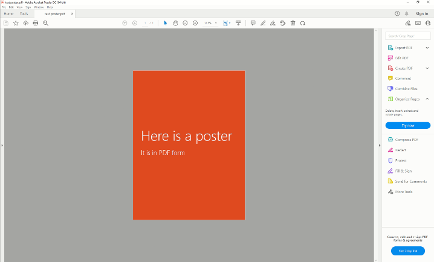
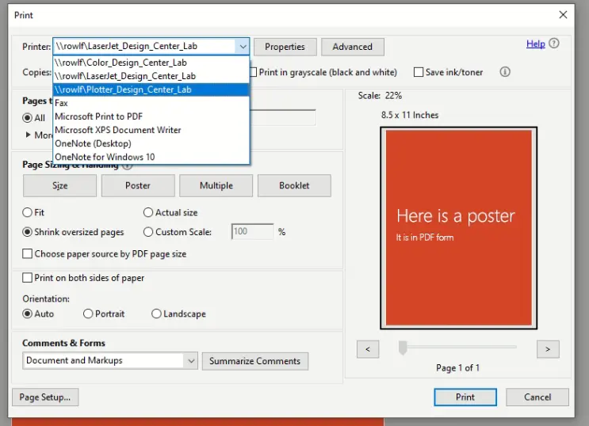
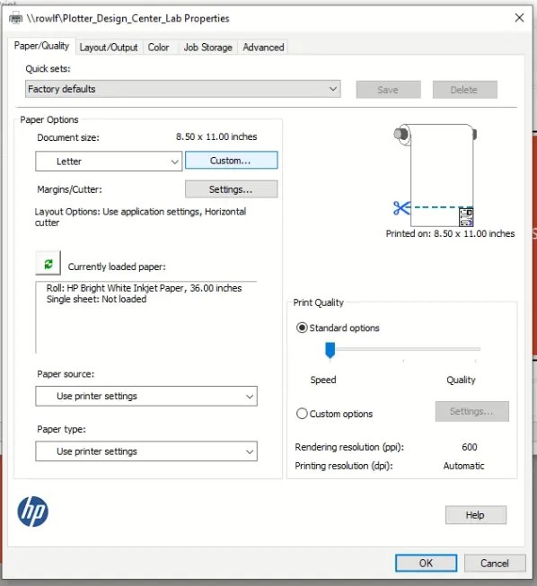
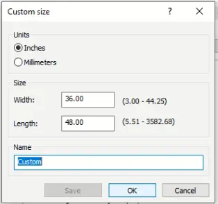
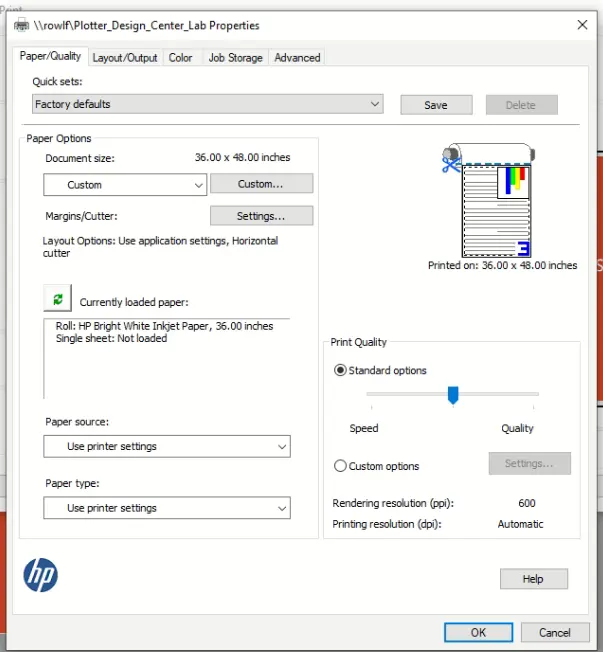
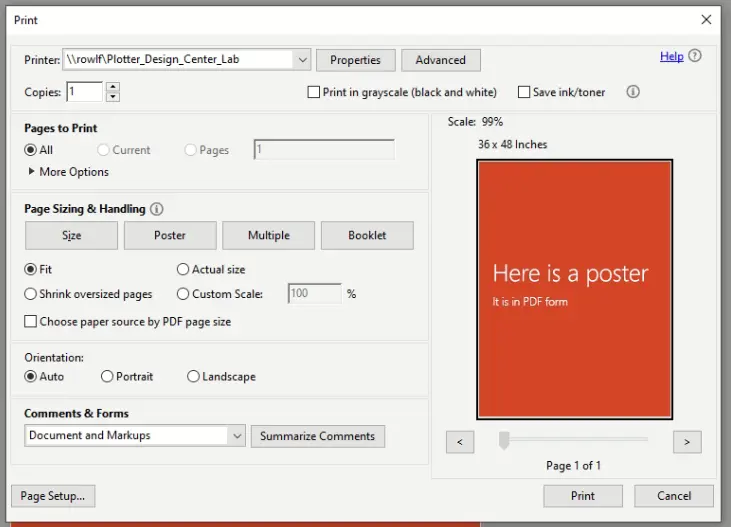
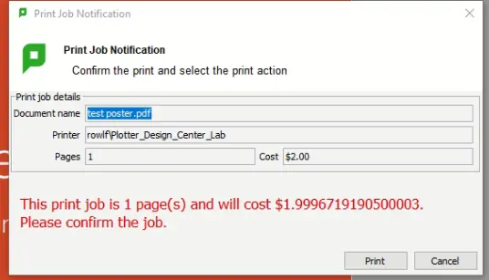

Using the Plotter
This article shows how to use the plotter printer, step by step.
Step 1
Identify the plotter. Make sure it is powered on by tapping the screen. If it wakes up, move onto step 2. Otherwise, push the power button, wait a few minutes, and try again.

Step 2
Open your PDF in Adobe Acrobat or Adobe Reader. If it asks you to sign in, use your ename@colostate.edu or another account. Adobe accounts are free.
Step 3
Select the printer with the word "Plotter" in it from the menu.
Step 4
Click on the "Properties" button near the top of the window. A window that looks like this will open up. Once it does, click on the "Custom..." button.
Step 5
After clicking the "Custom..." button, a window will pop up where you can entire your desired width and height. The width must not exceed 36 inches, which is the physical width of the plotter paper. When you're done, click OK, then close the Properties window.
Step 6
Once you've selected the correct size, drag the speed/quality slider to the middle of the scale.
Step 7
Depending on your needs, you may need to select a scaling option under "Paper Size & Handling". If you need your document to print to-scale, select the "Actual Size" radio button. Otherwise, select the "Fit" radio button. Once you've selected an option, click the "Print" button.
Step 8
A Papercut dialog box will appear and ask you to confirm the print job. Verify the cost and number of pages, then click the "Print" button.
That's it!
We hope this tutorial helps. Please contact us with feedback.